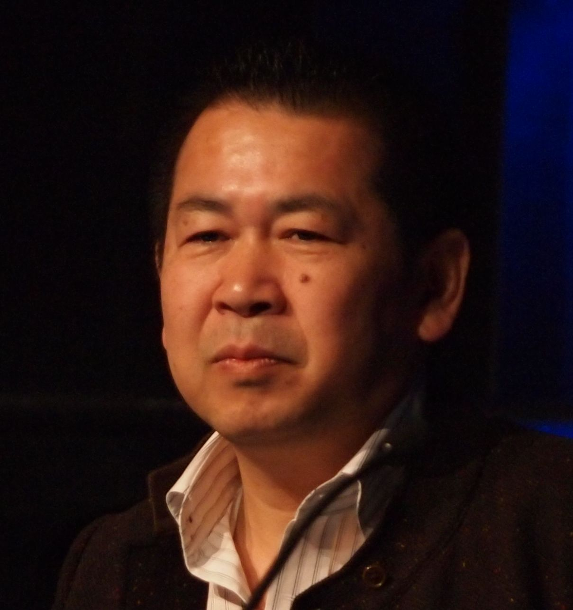

Sega Hang-On
The arcade motorcycle you rode with your whole body, launching Sega's body-sensation revolution.

Overview
Hang-On was a 1985 arcade motorcycle racing game that pioneered the full-body lean as primary control input. Its deluxe cabinet was a full-size motorcycle body that the player straddled, steering by leaning the entire bike side-to-side. A twist-grip throttle controlled acceleration, and real motorcycle brake levers handled braking. The bike body was mounted on an axle with springs underneath, allowing controlled banking at various angles.
The game was the first taikan (体感, 'body sensation') arcade title — a design philosophy created by director Yu Suzuki that moved arcade interaction from finger-operated controls to whole-body physical engagement. Hang-On sold approximately 20,000 arcade units worldwide, was the highest-grossing arcade game in the United States in 1985 and in both Japan and the United States in 1986, and launched Sega's decade of motion simulator dominance.
Suzuki, a dedicated motorcyclist, built the game for '16-year-old males' who wanted to ride but couldn't get a license. The title references Freddie Spencer's 'hanging off' technique in Grand Prix racing. The iconic soundtrack was composed by Hiroshi Kawaguchi, marking the first Sega arcade game to use digitized drum samples.
Deep dive
Before Hang-On, every arcade game was played with fingers: buttons, joysticks, trackballs, spinners. Hang-On asked: what if the player's whole body was the controller? The deluxe cabinet put the player on a full-size motorcycle replica with a spring-loaded axle that translated body lean into steering angle. Tighter corners required further lean. The twist-grip throttle and brake levers were real motorcycle parts — so real they kept breaking under 12-hour arcade days. Suzuki originally wanted a gyroscope for acceleration tilt, a 50cc engine for authentic sound (rejected due to exhaust), and a fan linked to the throttle for wind. The taikan concept spawned Space Harrier, Out Run, After Burner, Power Drift, and the 360-degree rotating R360 cabinet.
Directed by Yu Suzuki at Sega R&D1 (the nucleus of what became Sega AM2). A colleague brought Suzuki a torsion bar concept and asked him to design a game around it. Suzuki proposed the entire concept on a single densely-packed sheet of paper. Mechanical engineer Masaki Matsuno designed the motorcycle cabinet. Hiroshi Kawaguchi composed four rock tracks including the iconic main theme 'Theme of Love,' using PCM-sampled drums for the first time in a Sega arcade game. The arcade board used two Motorola 68000 CPUs with Sega's Super Scaler sprite-scaling technology.
Hang-On was a phenomenon. Approximately 20,000 legitimate units sold worldwide by early 1991, plus an estimated 20,000-30,000 pirate units. Each deluxe cabinet cost approximately $6,700 USD. The game was the highest-grossing arcade video game of 1985 in the United States and the highest-grossing arcade game of 1986 in both Japan and the US. US machines earned so many coins that coin mechanisms had to be modified for higher-value coins. Sega's US arm could not keep up with demand. The game is credited by multiple sources with helping pull arcades out of the 1983 industry downturn.
Team & pioneers
- Yu Suzuki. Director and lead programmer. Later headed Sega AM2, created Virtua Fighter, Shenmue. AIAS Hall of Fame (2003).
- Masaki Matsuno. Mechanical engineer who designed the motorcycle cabinet and lean mechanism
- Hiroshi Kawaguchi. Composer. Wrote Hang-On's iconic rock soundtrack, the first Sega arcade game to use PCM drum samples
- Yoji Ishii. Designer. Created two of the game's courses and composed 'Goal' and 'Name Entry' tracks
- Hiroshi Hamagaki. Chief artist
Media

Sources
- Wikipedia — Hang-On (GA-class article)
- Sega Retro — Hang-On (production credits, cabinet photos, magazine coverage)
- Horowitz, The Sega Arcade Revolution (2018), pp. 92-97
- Phantom River Stone — Yu Suzuki SEGA Hard Historia Interview (March 2021)
- Eurogamer — 'Out Ran: Meeting Yu Suzuki, Sega's original outsider' (2015)
- Sega-16 — 'Sega Stars: Hiroshi Kawaguchi' by Ken Horowitz (2016)